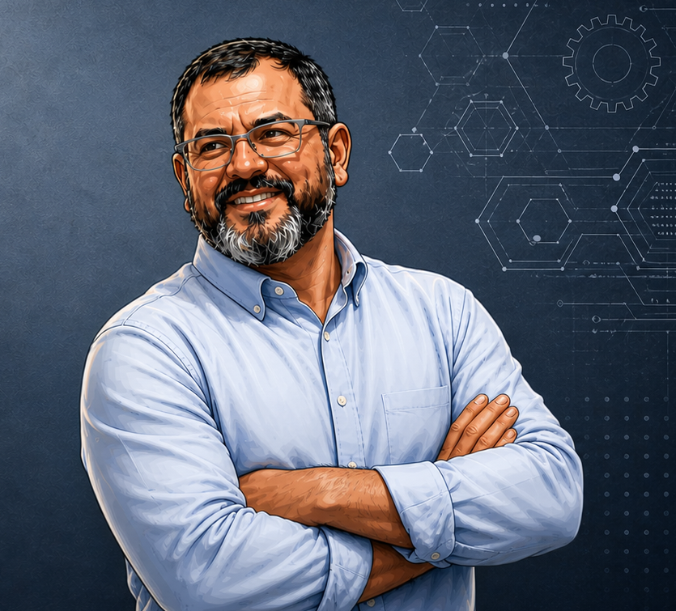

⚙
הקמת מפעלים וקווים
ייעוץ הנדסי, תכנון פונקציונלי והקמה של מפעלי ייצור וקווי ייצור חדשים משלב האפיון ועד למסירה מלאה.
הובלה הנדסית מקצה לקצה להקמת תשתיות ייצור, אוטומציה, רובוטיקה, מעבר מפיתוח לייצור וניהול פרויקטים מורכבים בסביבה גלובלית.

פורטפוליו שירותים לחברות שצריכות ביצוע הנדסי מעשי, לא רק מסמכי ייעוץ.
ייעוץ הנדסי, תכנון פונקציונלי והקמה של מפעלי ייצור וקווי ייצור חדשים משלב האפיון ועד למסירה מלאה.
הכנסת מערכות אוטומציה ורובוטים מתקדמים לקווים קיימים ושדרוג קווי ייצור ישנים להגברת הפריון והדיוק.
ליווי פיתוח מוצרים חדשים משלב האב־טיפוס למעבר לייצור המוני תוך אופטימיזציה של תהליכי הייצור.
אבחון ומתן פתרונות הנדסיים לבעיות מורכבות בייצור, איכות, תכן ותפעול.
נציגויות של חברות ציוד, כלים ותשתיות בינלאומיות להתאמה מדויקת של הטכנולוגיה לצורכי הלקוח.
שילוב טכנולוגיות ייצור מתקדמות, רובוטיקה ואוטומציה לתמיכה בצמיחה עסקית ותפעולית.
יניב כהן מביא עמו למעלה מ־22 שנות מומחיות וניסיון עשיר בהובלת פרויקטים הנדסיים מורכבים, עם רקע אקדמי בהנדסת מכונות מאוניברסיטת בן־גוריון.
תחומי המומחיות כוללים תהליכי ייצור מתקדמים, עיבוד שבבי, כבישה וטיפולים תרמיים, הקמת תשתיות ייצור בישראל ובגרמניה, מצוינות תפעולית ופתרונות בעלי ROI גבוה.
צרו קשר עם YC Technological Solutions לשיחת היכרות ראשונית.